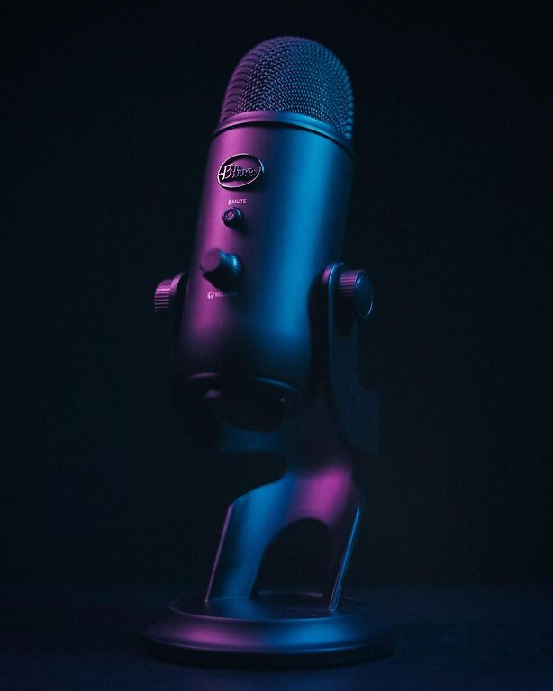

Work

It all started with a series of radio ads for a local egg company in 2009. Over the next decade, the list included over 55 multinational brands including Dettol, Vaseline, Loreal, Pampers, Panasonic, Ikea, Visa, to name a few.
Whether it is a radio ad, a TV commercial, an IVR, a corporate or training video, audio books, or documentaries, you will find the right voice in mine. Warm, versatile; a voice that can change from a mother’s voice to that of a doctor, trainer, friend, your next-door-neighbour, or even a no-nonsense woman- that's how my voice can be described.
Languages include English, Hindi, and Urdu. Feel free to contact me here for a free quote, custom audition, and bookings.
Clientele
Most clients have some idea of what they want from a voiceover, and some clients are very particular about what output they want. And then there are clients who only know what they do not want. That puts a lot of responsibility, and sometimes pressure, on the voiceover since she must pre-empt the client’s thought, give various options, and be willing to evolve as per the feedback being given.
So while some clients know what they want, other clients only reject whatever you do without being able to tell you exactly what they want. Their most favourite line is, "mmmm….not this- can you do something else with it?”
So even when you seethe on the inside with your client’s indecisiveness or lack of clarity, you must be professional. So, all kinds of clients are welcome here- imaginative or without imagination, and new or repeat.
Feel free to contact me here for a free quote, custom audition, and bookings.
About Me
A small news clip in the local newspaper about the then reigning voiceovers in the Indian advertising industry- Sarita Kapoor, and Nikhil Kapoor, was what planted the seed for me. At 10, I knew I wanted to be a voiceover someday. But I did not know the path will be so convoluted, and will take so long.
My dream finally came true when I got my first ‘job’ as a voiceover in 2009. Since then, it has been a journey I have loved, and enjoyed.
Based in Dubai, I am a freelance voice-over (VO) & translator (Hindi-English).
My voice can be described as relatable, believable, versatile, warm, soft, comforting, and can be modulated as husky, deep and soothing. It’s perfect for documentaries, narrations, podcasting, educational, corporate and training videos, and commercials.
Feel free to contact me here for a free quote, custom audition, and bookings.
Contact